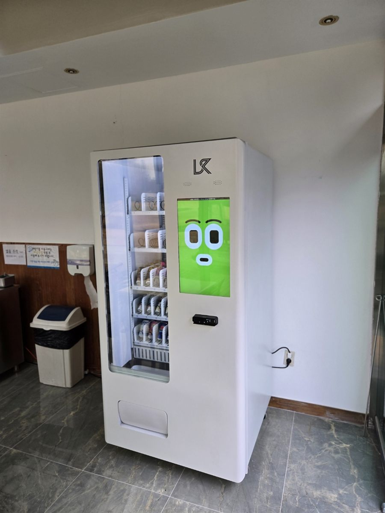

용인은 공장과 물류창고가 넓게 퍼져 있는 도시입니다. 이런 사업장 휴게실에서 자판기 문의가 꾸준히 들어옵니다. 근처에 편의점이 멀고, 쉬는 시간은 짧기 때문입니다. 10분 휴식에 밖으로 나갔다 오기는 빠듯하니, 휴게실 안에서 바로 사 마실 수 있는 게 가장 반가운 편의시설이 됩니다.
이번 자리는 휴게실 한쪽 빈 벽이었습니다. 공장 휴게실에서 먼저 보는 건 전용 콘센트가 있는지, 바닥이 평평한지, 출입문과 정수기 사이 동선이 막히지 않는지입니다. 냉장 자판기는 전기를 꾸준히 쓰기 때문에 멀티탭에 여러 기기를 물리지 않고 벽 콘센트에 바로 꽂는 게 안전합니다. 뒷면은 열이 빠지도록 벽에서 조금 띄워 둡니다.
용인 공장 휴게실에 맞는 구성
공장은 교대 시간과 점심·새참 시간에 한꺼번에 몰리는 자리입니다. 그래서 인기 품목은 칸을 두세 줄씩 넉넉히 잡고, 잘 안 나가는 품목은 한 줄로 줄였습니다. 한 대로 시작해 보고 줄이 길어지면 한 대를 더 붙이는 방식이 부담이 적습니다.
여름에는 생수와 이온음료, 캔커피가 제일 먼저 비고, 야간 근무자가 있는 곳은 에너지음료와 초코바 같은 간단한 간식도 잘 나갑니다. 품목은 현장 담당자와 함께 정하고, 첫 한두 달 판매 기록을 보면서 바꿔 나갑니다.
결제는 신용·체크카드와 삼성페이·카카오페이·네이버페이를 받습니다. 현금을 다루지 않으니 잔돈 관리가 필요 없고, 새벽 근무 시간에도 사람 없이 그대로 운영됩니다. 매출과 칸별 재고는 휴대폰 앱으로 확인하므로 채우러 가기 전에 무엇을 챙길지 미리 알 수 있습니다.
공장에 놓을 때 좋은 점과 어려운 점
좋은 점은 찾는 사람이 정해져 있다는 것입니다. 근무 인원이 크게 바뀌지 않으니 한 달만 운영해 봐도 얼마나 나가는지 감이 잡힙니다. 직원 복지로 보이는 효과도 있어 회사 입장에서도 반기는 경우가 많습니다.
어려운 점도 있습니다. 주말과 명절, 공장 휴무 기간에는 매출이 거의 멈춥니다. 이 기간에는 유통기한이 짧은 품목을 미리 줄여 두는 게 좋습니다. 또 먼지가 많은 작업장 가까이에 두면 기계 흡입구가 쉽게 막히니, 작업 공간과 문으로 나뉜 휴게실 안쪽을 권해 드립니다.
용인 무인매장, 이런 자리가 잘 됩니다
용인은 구마다 성격이 뚜렷합니다. 기흥구는 반도체·전자 관련 사업장과 협력업체가 많아 사무동과 공장 휴게실 수요가 꾸준합니다. 처인구는 원삼면 반도체 클러스터 조성이 진행 중이고, 이동읍·남사읍·양지면·백암면 일대에 제조공장과 물류창고가 흩어져 있어 교대 근무자가 많습니다.
수지구 죽전·동천·상현동과 기흥구 동백·보정동은 아파트 단지가 많아 단지 상가 무인매장, 스터디카페, 헬스장이 잘 맞습니다. 단국대 죽전캠퍼스, 강남대, 용인대, 명지대 자연캠퍼스 주변 원룸촌도 늦은 시간 수요가 있습니다. 에버랜드와 한국민속촌이 있는 포곡읍·보라동 쪽은 주말 방문객이 몰리는 편입니다.
용인 서비스 지역
수지구 — 죽전동 · 동천동 · 상현동 · 풍덕천동 · 신봉동 · 성복동
기흥구 — 구갈동 · 신갈동 · 상갈동 · 보라동 · 동백동 · 마북동 · 언남동 · 보정동 · 영덕동 · 서천동
처인구 — 김량장동 · 역북동 · 삼가동 · 마평동 · 유방동 · 모현읍 · 포곡읍 · 남사읍 · 이동읍 · 원삼면 · 백암면 · 양지면
인접한 수원 영통 · 성남 분당 · 화성 동탄 · 광주 오포 · 이천 · 안성까지 같은 조건으로 나갑니다.
용인 무인창업, 이렇게 시작하시면 됩니다
설치비는 받지 않습니다. 자리 확인부터 품목 구성, 기계 반입, 카드 결제 연동, 재고 운영 방법까지 한 번에 안내해 드립니다. 공장처럼 총무팀이나 안전 담당 결재가 필요한 곳은 견적서와 설치 위치 도면을 따로 준비해 드리니 편하게 말씀해 주세요.
비용은 구입이 렌탈보다 유리한 편입니다. 렌탈료를 몇 년 내는 것보다 처음에 사 두는 쪽이 총액이 낮게 나오는 경우가 많습니다. 구성별 36개월 총비용은 구입 vs 렌탈 비교 가이드에 정리해 두었습니다.
용인 무인자판기 설치 상담
휴게실 사진 한 장만 보내 주셔도 됩니다. 콘센트 위치와 공간을 보고 몇 대가 맞을지 먼저 봐 드린 뒤 견적을 보내 드립니다.
※ 사진은 픽포스가 시공한 설치 사례이며, 글에 적힌 지역의 현장 사진은 아닙니다. 자판기 구성과 품목은 자리와 업종에 따라 달라지며, 사업장 규정에 따라 설치 위치나 품목에 제한이 있을 수 있습니다. 정확한 금액은 견적서로 안내드립니다.